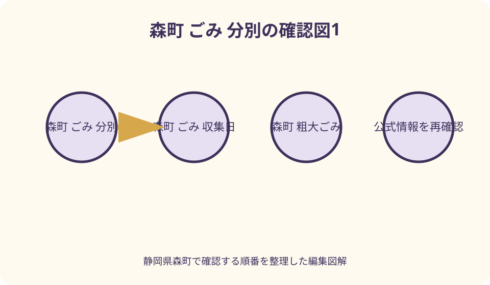
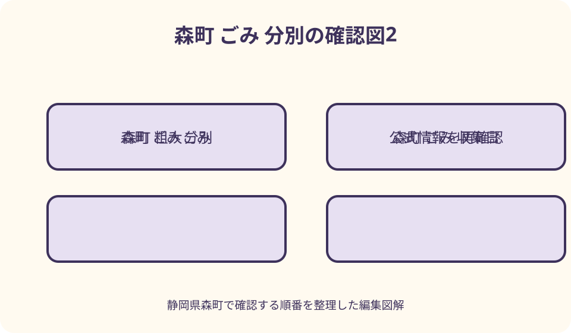

暮らし・転入手続｜最終確認 2026-08-10
静岡県森町のごみ分別・収集日・粗大ごみを転入後に確認する方法
静岡県森町でごみを出す前に、住所だけで曜日を推測せず、町内会名または集合住宅名、利用できる集積所、当年度の分別表・資源ごみ等収集カレンダーを確認してください。燃やせるごみは町指定袋の記名など町の出し方を、資源・埋立ごみは地区の収集日と集積所での容器を確認します。指定袋やコンテナに入らない物、多量ごみ、家電リサイクル法対象品、パソコン、事業活動のごみは通常集積所と別経路です。転入初週や収集不可時は無断で隣地区へ持ち込まず、住民生活課生活環境係、管理会社、町内会等へ品目と住所を伝えて確認します。

編集イラスト最初に確認するのは曜日ではなく地区と集積所
森町へ転入してごみを出す時、住所を検索して見つけた曜日だけでは足りません。同じ字名の中でも町内会や集合住宅の運用、利用する集積所が異なる可能性があるため、まず自宅がどの収集単位に属するかを確認します。
確認順は、賃貸なら管理会社・貸主、分譲や戸建てなら町内会または近隣の案内、最後に森町住民生活課生活環境係です。『静岡県周智郡森町○○番地』と建物名を伝え、町内会名、集積所、燃やせるごみと資源等の場所を聞きます。
地図上で最も近い集積所が自宅の利用場所とは限りません。鍵、ネット、コンテナ準備、当番など地域・建物固有の運用があるため、掲示だけを見て別地区の集積所へ持ち込みません。
確認したら、集積所の名称または目印、徒歩経路、利用区分、出せる時間帯、当年度カレンダー名、問合せ先を一枚にします。家族全員が同じ情報を見られる場所へ置きます。
当年度の分別表とカレンダーを一組で使う
森町公式は2026年度の家庭ごみ分別表と資源ごみ・埋立ごみ収集日カレンダーを公開しています。分別表は品目と出し方、カレンダーは地区別の日付を確認する資料であり、片方だけでは出す判断が完結しません。
町公式によると、2026年4月1日に分別ルールが変更されました。古い保存版や家に残っていた前年紙面ではなく、公式ページに掲載された当年度PDFと生活環境係の案内を優先します。
年度途中の転入では、紙のカレンダーを役場本庁舎で入手できるか確認します。PDFを保存する場合はファイル名に年度を加え、スマートフォンの古いダウンロードを翌年度に開かないようにします。
祝日、年末年始、荒天、臨時変更を通常曜日から推測しません。カレンダーに記載がない変更は町公式のお知らせ、管理会社や町内会の連絡を確認し、当日の集積状況だけで判断しないようにします。
転入初週は生ごみ・梱包材・大型物を分ける
引越し直後は、生ごみ、日常の可燃物、段ボール、緩衝材、家電、家具が一度に出ます。全部を指定袋へ詰めるのではなく、腐敗しやすい物、資源に回せる物、通常収集へ出せない可能性がある物に分けます。
初日の買物で町指定袋を用意し、袋の販売場所とサイズを確認します。町公式の出し方は町内会名またはアパート名と氏名の記入を案内しているため、無記名でよいと推測せず最新の袋表示も読みます。
段ボールや古紙は引越業者の回収、販売店、地域の資源回収などを確認し、雨天の集積所へ大量に置きません。緩衝材は材質と汚れの有無で分別が変わり得るため、品目検索か生活環境係へ聞きます。
ベッド、棚、家電などは引越前に処分経路を決める方が安全です。転入後に残った場合は、通常収集のサイズ、直接搬入、販売店回収、許可業者のどれかを品目ごとに確認します。

指定袋は燃やせるごみの入口で万能袋ではない
森町公式のごみの出し方では、燃やせるごみに町指定の専用袋を使い、町内会名またはアパート名と氏名を記入するルールが案内されています。購入時は現行の袋であることを包装表示で確認します。
袋に入れば何でも燃やせるわけではありません。びん、缶、電池、充電池、金属、家電リサイクル対象品、危険物などは別区分です。迷う物は袋へ入れる前に家庭ごみ品目検索を使います。
生ごみは水分を切り、袋の口を指定された方法で閉じ、片手で扱える重さなど公式の注意を確認します。一回に出せる量や時刻も変更され得るため、当年度資料と現地掲示を照合します。
名前の記入へ抵抗がある場合も、独自にイニシャルへ変えず生活環境係へ相談します。個人情報への配慮と、地域で排出者を確認する運用を自分だけで決めません。
燃やせるごみは材質・汚れ・大きさを確認する
生ごみ、汚れた紙、紙おむつ、木質、ゴム・革などは町公式で燃やせるごみの例として案内されています。ただし商品は複数素材を組み合わせるため、名称だけでなく分解できるか、金属や電池がないかを見ます。
プラスチックは、容器包装か製品か、汚れを落とせるか、指定袋へ入る大きさかで扱いを確認します。2026年度の変更内容があるため、過去に住んだ自治体の分け方を森町へ持ち込みません。
紙おむつや衛生用品は汚物の処理、におい漏れ、袋の扱いを公式表で確認します。個人情報が書かれた紙は必要に応じて読めないよう処理しますが、危険な薬品を混ぜません。
剪定枝や刈草は、乾燥、長さ、太さ、量、袋に入るかで通常収集以外の案内になる場合があります。庭の片付けを始める前に搬入先や民間リサイクルの受入条件を確認します。
資源ごみは洗う・外す・分けるまでが準備
びん、缶、ペットボトル、プラスチック製容器包装などは、同じ集積所でも容器や分類が異なります。資源等の収集日は地区別カレンダーで確認し、燃やせるごみの日へまとめて出しません。
容器は中身を使い切り、汚れを落とせる範囲で洗い、キャップやラベルの扱いを当年度分別表で確認します。割れたびん、薬品容器、耐熱ガラスなどを普通のびんと同じと推測しません。
集積所では水色コンテナ、ネットなど品目ごとの入れ物が示される場合があります。袋に入れたままコンテナへ置くか、中身だけ移すかを現地の指示に従い、回収後に容器を放置しません。
拠点回収も通常の地区回収と対象品目、日時、場所が別です。町公式の資源ごみ拠点回収ページで当日の実施と持込方法を確認し、対象外品を置いて帰らないようにします。

埋立ごみ・危険物は混ぜずに品目名で調べる
陶磁器、ガラス、れんがなどは埋立ごみの候補でも、材質、大きさ、家庭から出た量によって集積所か直接搬入かが変わり得ます。割れ物は収集作業者が安全に扱える方法を町へ確認します。
使い捨てライター、スプレー缶、カセットボンベ、刃物、蛍光管、電池は同じ危険物ではありません。中身を抜く方法や穴開けの要否を自己流で決めず、個別の品目案内を確認します。
充電式電池を内蔵する小型機器は、収集・処理施設の火災につながるおそれがあります。取り外せる電池は製品説明に従い、端子保護と回収協力店等の利用を確認します。無理な分解はしません。
塗料、油、薬品、農薬、注射針などは町で収集しない品目として案内されるものがあります。中身を流す、別容器へ移す、他のごみに隠すことをせず、購入店、医療機関、専門業者へ相談します。
粗大ごみは燃やせる・燃やせないで搬入先を分ける
森町の案内では、指定袋に入らない燃やせるごみや引越し等の多量ごみは中遠クリーンセンター、収集コンテナに入らない燃やせない物などは中遠広域粗大ごみ処理施設へ直接搬入する経路があります。
『粗大ごみ』という名前だけで一つの施設へ向かわず、主な材質、寸法、数量、解体状態、家庭から出た物かを電話で伝えます。施設ごとに受入品、受付日、時間、本人確認、車両、手数料が異なります。
家具に金属、鏡、ガラス、電池が付く場合、取り外しが必要かを確認します。自分で解体する時は刃物、粉じん、転倒の危険があるため、無理なら許可業者や販売店回収を検討します。
直接搬入の営業時間や料金は2026年8月10日時点の町ページにも掲載がありますが、固定情報として転載しません。訪問前に施設公式で最新の受入日、臨時休業、料金、予約の要否を確認します。
家電は三つに分ける——家電四品目・小型・その他
テレビ、エアコン、冷蔵庫・冷凍庫、洗濯機・衣類乾燥機など家電リサイクル法対象品は、町が収集しないと公式案内にあります。対象範囲は型式や製品区分で確認し、通常集積所や粗大施設へ持ち込みません。
処分方法には、買替店・購入店、町が案内する協力店、指定引取場所への自己搬入、許可業者への依頼などがあります。料金は品目、メーカー、サイズ、運搬で変わるため、依頼先へ個別確認します。
家庭用パソコンや携帯電話等は、森町役場での回収案内がありますが、地区集積所では回収しないと明記されています。対象機器、付属品、受付時間、データ消去を最新ページで確認します。
除湿機や冷風機などはフロン類の有無で通常の小型家電と異なる処理が必要な場合があります。見た目や大きさで分類せず、銘板の型番を製造元、生活環境係、専門業者へ伝えます。
事業ごみは家庭の指定袋へ移し替えない
店舗、事務所、農業、個人事業、在宅事業など事業活動に伴うごみは、家庭生活から出たごみと分けます。自宅と事業所が同じでも、排出原因が事業なら家庭集積所へ出せるとは限りません。
森町公式は事業系一般廃棄物・産業廃棄物を町で収集できないごみとして案内し、排出事業者による搬入や許可業者への相談を示しています。指定袋へ入る大きさでも家庭ごみへ変わりません。
事業ごみは、品目、発生工程、量、頻度、保管場所を整理し、一般廃棄物か産業廃棄物かを関係窓口へ確認します。農薬容器、事業用機械、建設系の廃材などを通常収集へ混ぜません。
収集運搬を依頼する場合は、対象品目に必要な許可、収集頻度、容器、契約、料金を確認します。安価という理由だけで無許可らしい回収者へ渡さず、町や県の許可業者情報を使います。
収集されず残った時は原因を決めつけない
出した袋や物が残っていても、直ちに収集漏れとは限りません。曜日・地区、時刻、指定袋、記名、分別、量、集積所、臨時変更のどこに原因があるかを、貼付された注意票やカレンダーから確認します。
残った物をそのまま次回まで置かず、いったん持ち帰れる安全な状態なら回収します。中身が危険、破損、漏出、交通の妨げになっている場合は触り方を自己判断せず、生活環境係や管理者へ連絡します。
問い合わせでは、住所、町内会・建物名、集積所、出した日時、品目、袋、注意票の文言を伝えます。『ごみを取ってくれない』だけでなく、判別に必要な情報をそろえます。
別地区の集積所、コンビニ、道路脇へ移すことは対案になりません。次回収集、分別し直し、拠点回収、直接搬入、販売店・許可業者のどれが適切かを確認します。
一時保管はにおい・火災・子どもの接触を分ける
収集日まで保管する生ごみは水分とにおい、資源容器は残液、段ボールは湿気、電池は端子と発熱をそれぞれ管理します。一つの物置へ無造作に積まず、区分ごとに容器を分けます。
リチウムイオン電池を含む機器は、高温になる車内、直射日光、可燃物の近くを避け、膨張や破損があれば触り続けず製造元や回収窓口へ相談します。水につけるなど独自処置をしません。
刃物、割れ物、薬品、洗剤、農薬は子どもやペットが触れない場所に置き、内容表示を消しません。処理方法が決まるまで別容器へ混合せず、元容器で保管できるかを確認します。
屋外保管は動物、風、雨、不法投棄と区別できなくなる問題があります。集積所以外へ早出しせず、自宅敷地内でも道路や隣地へ飛散しない方法を選びます。
地区名・集積所の確認表を家族で更新する
確認表の上段は住所、建物名、町内会名、管理会社、通常集積所、資源等集積所、鍵や当番の有無です。聞いた日と相手を記録し、引越し時にも次の入居者へ推測で伝えません。
中段は燃やせる、びん・缶、ペットボトル、プラスチック、電池・蛍光管、埋立の順に、当年度カレンダーの該当欄と出す容器を記載します。曜日を恒久情報として印刷しません。
下段は粗大、家電四品目、パソコン・携帯、危険物、事業ごみの相談先です。受付時間や料金は書き込まず、公式ページへのリンクと確認日を置く方が変更へ対応できます。
年度替わりには新カレンダーへ差し替え、古い紙へ大きく使用終了と書きます。家族のスマートフォン、冷蔵庫、事業所で異なる版を使わないよう、保管元を一つにします。
災害時のごみは通常収集と分離して町の指示を待つ
地震、浸水、土砂、台風後には、壊れた家具、泥、瓦、家電、生ごみなどが同時に発生します。平常時の集積所へまとめて出さず、町が災害廃棄物の仮置場や分別、搬入時期を案内するまで情報を確認します。
森町地域防災計画は、災害時の生活系ごみ処理を災害廃棄物処理計画等に沿って行う考えを示しています。計画にある候補や過去の運用を、実際の災害時の開設場所と決めつけません。
片付け前は家族の安全、電気・ガス、倒壊、石綿らしい建材、薬品、汚泥に注意します。被災建物へ無理に入り、分別のために危険物へ触れず、行政や消防、専門業者の案内を優先します。
損害写真、罹災証明、保険、修理との関係で、撤去前の記録が必要な場合があります。衛生上の緊急処理との順序を町や保険会社へ確認し、費用や補償を自己判断しません。
良い点——分別経路を知ると引越し後の滞留を減らせる
森町のごみ情報の良い点は、当年度分別表、地区別カレンダー、品目検索、直接搬入、収集できない物の案内が公式サイトからたどれることです。品目に応じて確認先を変えられます。
転入初週に地区と集積所を確定すれば、日常ごみを部屋へためず、資源や大型物を別経路へ回せます。曜日暗記より、公式資料へ戻れる確認表を作る方が年度変更にも対応できます。
粗大ごみを燃やせる・燃やせないで分けると、施設へ着いてから受入不可になる可能性を減らせます。事前に寸法、材質、数量を測る習慣も付きます。
家電や事業ごみを家庭集積所から外すことで、電池火災や不適切処理を避ける行動につながります。ただし分けただけで処理完了ではなく、正式な引渡先まで確認します。
注文したい点——前の自治体のルールを持ち込まない
注文したい点は、同じ品目名でも自治体により区分、袋、収集方法が違うことです。以前の居住地で資源だった物、燃やせた物という記憶を森町の判断に使いません。
集合住宅の掲示が古い可能性も考え、年度表示を確認します。管理会社の案内と町公式が食い違う時は、どの集積所・契約収集の運用かを双方へ確かめます。
検索上位の古い町ページに載る曜日、料金、営業時間を固定情報として使わないことも重要です。2026年度には分別変更が案内されているため、最新ページと窓口へ戻ります。
『無料回収』『何でも回収』という巡回業者へ安易に渡しません。家庭の不用品でも許可やリサイクル制度が関係するため、販売店、町が示す協力店、指定引取場所、許可業者を確認します。
対案・結論——出せない日は別地区でなく別経路を探す
結論は、町内会・建物名、利用集積所、当年度分別表、地区別カレンダーの順で確定し、燃やせる、資源、埋立を分けることです。粗大、家電、事業ごみは初めから通常収集の外で調べます。
収集日を逃した時は、自宅で安全に保管して次回を待つ、対象品の拠点回収を確認する、施設へ直接搬入する、販売店や許可業者へ依頼するという対案があります。品目ごとに使える経路は異なります。
保管できない、腐敗、漏出、火災のおそれがある場合は、隠して通常袋へ入れず生活環境係へ状況を具体的に伝えます。緊急性がある薬品や電池等は製造元、消防等の案内が必要な場合もあります。
収集可否、料金、曜日、施設営業は本記事で保証しません。2026年8月10日以後の変更もあり得るため、出す当日に森町公式、施設公式、管理会社や町内会の最新案内を確認してください。
大石の視点——ごみ出しは住所を地域の運用へ接続する作業
大石の視点では、転入後のごみ出しで最初に必要なのは細かな暗記ではなく、自分の住所がどの町内会、建物、集積所の運用につながるかを知ることです。ここが曖昧だと曜日表だけ合っても出せません。
分別で迷った物は、写真だけで問い合わせず、材質、寸法、電池、汚れ、中身、家庭か事業かを言葉にします。町や施設が判断するための情報がそろい、家族内でも同じ分類を再現できます。
引越し荷物を一日で捨て切ろうとすると、通常収集と直接搬入、家電回収が混ざります。腐敗する物を優先し、資源をたたみ、大型物は予約・搬入条件を確認する順番なら、部屋を安全に整えられます。
毎年のカレンダー差替えは小さな作業ですが、森町で暮らし続けるための更新です。古い紙を捨て、新しい版の地区名を確認し、家族へ一度共有することが、集積所と収集作業への実際的な配慮になります。
公式情報・確認先
掲載内容は次の一次情報を基礎に整理しました。営業、料金、催し、交通は変わるため、出発前または手続き前にリンク先で最新情報を確認してください。
- 森町公式 家庭ごみ分別表・収集日カレンダー・ガイドブック（静岡県森町、2026-08-10確認）
- 森町公式 ごみの出し方（静岡県森町、2026-08-10確認）
- 森町公式 町では収集できないごみ（静岡県森町、2026-08-10確認）
- 森町公式 家庭ごみの出し方かな検索（静岡県森町、2026-08-10確認）
- 森町公式 パソコン・携帯電話の回収（静岡県森町、2026-08-10確認）
- 森町公式 森町地域防災計画（静岡県森町、2026-08-10確認）
- 森町公式 防災情報（静岡県森町、2026-08-10確認）